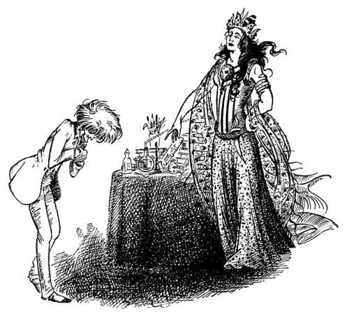
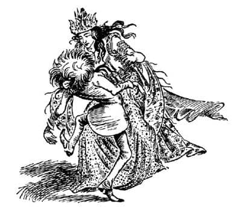
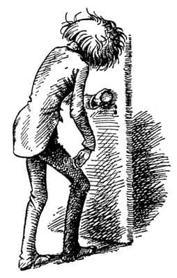
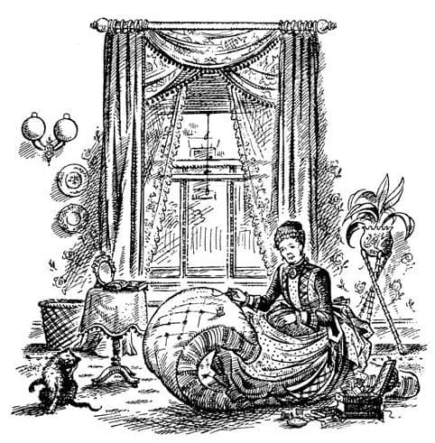

Andrew Dayı’nın Sıkıntıları Başlıyor
“Bırak! Bırak!” diye çığlık atıyordu Polly.
“Sana dokunmuyorum ki” dedi Digory.
Sonra başları suyun üstüne çıktı. Dünyalar Arasındaki Orman’ın güneşli sessizliği yine her tarafa sinmişti. Az önce terk ettikleri çürümüş ve harap yerden sonra burası her zamankinden daha sıcak, huzurlu ve zengin görünüyordu. Eğer fırsat verilseydi, sanıyorum, yarı uykulu bir şekilde yere uzanarak, kim olduklarını ve nereden geldiklerini yeniden unutup, ağaçların büyüme seslerini dinleyerek kendilerini eğlendirirlerdi. Fakat bu kez onları alabildiğine uyanık tutan bir şey vardı: Kraliçe ya da Cadı (nasıl adlandırmak isterseniz) Polly’nin saçlarına sımsıkı yapışıp onlarla beraber gelmişti. Polly bu nedenle “Bırak!” diye bağırıyordu.
Bu olayla birlikte, yüzükler hakkında Andrew Dayı’nın da bilmediği ve doğal olarak Digory’ye söylemediği başka bir şey daha ortaya çıkmıştı. Yüzükleri kullanarak dünyadan dünyaya geçebilmek için onlara dokunmanız ya da takmanız şart değildi; yüzüklere dokunan birine dokunmanız yeterliydi. Sanki bir mıknatıs işlevi görüyorlardı ve herkes bilir ki eğer mıknatısla bir iğneye dokunursanız, o iğneye dokunan başka iğneler de onunla gelirler.
Kraliçe Jadis şimdi ormandaydı ama çok farklı görünüyordu. Rengi öncesine göre çok soluktu; öylesine soluktu ki güzelliğinden eser kalmamıştı. Kamburlaşmıştı ve sanki buranın havası onu boğuyormuşçasına, zorlukla nefes alıyor gibiydi. İki çocuk da artık hiç korkmuyordu.
“Bırak! Bırak saçımı!” dedi Polly. “Bu da ne demek oluyor?”
“Hey! Bırak onun saçını! Hemen!” dedi Digory.
İkisi birden dönerek onunla boğuşmaya başladılar. Kraliçe’den daha kuvvetliydiler ve birkaç saniye içinde Polly’nin saçını bıraktırmayı başardılar. Kraliçe nefes nefese kalıp gerilerken gözlerinde bir dehşet ifadesi görülmekteydi.
“Çabuk, Digory!” dedi Polly. “Yüzükleri değiştir ve eve giden gölete dalalım.”
“İmdat! İmdat! Acıyın!” diye zayıf bir sesle bağırdı Cadı arkalarından, sendeleyerek. “Beni de götürün. Beni bu iğrenç yerde bırakamazsınız. Burası beni öldürür.”
“Böyle gerekiyor” dedi Polly. “Senin dünyanda onca insanı öldürmen gerektiği zamanki gibi tıpkı. Çabuk ol Digory.”
Yeşil yüzüklerini taktılar, fakat Digory dedi ki: “Hay aksi, ne yapmalı acaba?” Kraliçe’ye acımaktan kendini alamamıştı.
“Of, eşeklik yapma” dedi Polly. “Bire on bahse girerim ki numara yapıyor. Haydi gel.” Ve sonra ikisi birden eve götüren gölete daldılar. “İyi ki o işareti koymuşuz” diye düşündü Polly. Fakat atlarlarken, Digory kulaklarını tutan iri ve soğuk parmakları hissetmişti. Dibe daldıkça ve kendi dünyamızın karmaşık şekilleri görünmeye başladıkça, o parmakların kavrayışı da güçleniyordu. Cadı, görüldüğü kadarıyla kuvvetini yeniden kazanıyordu. Digory tekme attı, mücadele etti ama bunlar hiç işe yaramadı. Bir an sonra kendilerini Andrew Dayı’nın çalışma odasında buldular. Andrew Dayı ayakta duruyor, Digory’nin dünyanın ötesinden getirdiği harika yaratığa bakıyordu.
İyice bakması da gerekirdi, çünkü Digory ve Polly de bakıyordu. Cadı’nın, halsizliğinin üstesinden geldiğine hiç kuşku yoktu. Ve onu etraftaki sıradan şeylerle bizim dünyamızda görmek, doğal olarak herkesin nefesini kesiyordu. Charn’da yeteri kadar korkunçtu; Londra’da ise insanı dehşete düşürüyordu. Her şeyden önce, onun ne kadar iri olduğunu anlamamışlardı. Digory ona baktığında “İnsan değil bu” diye düşünmüştü. Haklı da sayılabilirdi, çünkü bazıları Charn kraliyet ailesinin kanında devlerin kanının da bulunduğunu söylerdi. Fakat onun uzun boyu bile güzelliği, sertliği ve vahşiliğinin yanında hiç kalırdı. Londra’da karşılaşacağınız birçok insandan on kez daha canlı görünüyordu. Andrew Dayı başını eğerek selamlıyor, ellerini ovuşturuyor ve gerçeği söylemek gerekirse, korkmuş görünüyordu. Cadı’nın yanında, ufacık, garip bir yaratık gibi kalmıştı. Fakat buna karşın, Polly’nin sonradan da söylediği gibi, Kraliçe’yle aralarında bir benzerlik, yüz ifadelerinde bir aynılık vardı. Bu, bütün kötü büyücülerin sahip olduğu, Jadis’in Digory’nin yüzünde bulamadığını söylediği ifadeydi. Onları bir arada görmenin bir iyi tarafı da, insan nasıl bir boğayı gördükten sonra inekten ya da bir çıngıraklı yılanı gördükten sonra solucandan korkmazsa, artık bir daha asla Andrew Dayı’dan korkmayacak olmalarıydı.

“Pöh!” dedi Digory kendi kendine düşünürken, “Dayım, bir büyücü mü? Pek sayılmaz. Gerçek büyücü Kraliçe.”
Andrew Dayı ellerini ovuşturarak, eğilip selam vermeye devam ediyordu. Nazikçe bir şeyler söylemeye çalışıyordu ancak ağzı o kadar kuruydu ki, konuşamıyordu. Yüzüklerle yaptığı “deney” dediği şey, umduğundan fazla başarılı olmaya başlamıştı. Yıllardır büyü ile uğraşmasına karşın, riski hep (herkesin yapacağı gibi) başkalarının üstüne yıkmıştı. Fakat böyle bir şey daha önce hiç olmamıştı.
Sonra Jadis konuşmaya başladı; sesi yüksek değildi, ama sesinde tüm odayı titreten bir şey vardı.
“Beni bu dünyaya çağıran büyücü nerede?”
“Eh – eh – bayan” diye arada soluklanarak konuştu Andrew Dayı, “Şeref verdiniz – çok memnun oldum – hiç beklemediğim bir ziyaret – sadece, hazırlık yapabilme olanağım olsaydı eğer – ben – ben—”
“Büyücü nerede, aptal?” dedi Jadis.
“Ben – benim bayan. Umarım bu yaramaz çocukların izin almadan yaptıklarını sandığım – şey – şeyleri bağışlarsınız. İnanın ki, bir kasıt yoktu—”
“Sen?” dedi Jadis daha da korkunç bir sesle. Sonra, bir adımda odanın öbür tarafına geçti, Andrew Dayı’nın kır saçlarını avuçlayıp kavradı ve yüzü kendi yüzüne bakacak şekilde başını geriye doğru çekti. Sonra, Charn sarayında Digory’nin yüzünü incelediği gibi, onun yüzünü de inceledi. Andrew Dayı, tüm bu süre boyunca gözlerini kırpıştırıyor ve heyecanla dudaklarını yalıyordu. Sonunda Cadı onu bırakınca sendeleyerek duvarın yanına yığıldı. “Anlaşılıyor” dedi küçümseyerek, “sen – bir çeşit – büyücüsün. Ayağa kalk, köpek, kendin gibilerle konuşuyormuş gibi sere serpe uzanma orada. Nasıl öğrendin büyücülüğü? Yemin ederim ki sende soylu kanı yok.”

“Şey – eh – tam anlamıyla değil belki” diye kekeledi Andrew Dayı. “Kesinlikle soylu değiliz bayan. Bununla beraber, Ketterley’ler eski bir ailedir. Eski bir Dorsetshire ailesi, bayan.”
“Dur bakalım” dedi Cadı. “Senin ne olduğunu biliyorum. Sen kitaplara ve kurallara uyarak çalışan küçük, gezgin bir büyücüsün. Senin ne kanında ne de kalbinde gerçek büyücülük var. Senin gibileri, benim dünyamda bin yıl önce yok edildiler. Fakat burada ben, uşağım olmana izin vereceğim.”
“Size hizmet etmekten ze – zevk duyarım – mutluluk duyarım, emin olun.”
“Kes sesini! Çok fazla konuşuyorsun. İlk görevin şu. Görüyorum ki büyük bir şehirdeyiz. Hemen bana bir at arabası ya da uçan halı ya da iyi eğitilmiş bir ejderha ya da sizin ülkenizde soylular ne kullanıyorsa ondan bul. Sonra da beni giysiler, mücevherler ve şanıma yakışır köleler alabileceğim yerlere götür. Yarın dünyanın fethine başlayacağım.”
“Ben – ben – hemen gidip bir araba çağırayım” dedi Andrew Dayı nefes nefese.

“Dur!” dedi Cadı, tam kapıya ulaşmak üzereyken. “Sakın beni aldatmayı düşünme. Gözlerim duvarların arkasını ve insanların beyinlerinin içini görür. Nereye gidersen git gözlerim üzerinde olacak. İtaatsizlik ettiğin anda sana öyle bir büyü yaparım ki üzerine oturduğun her şeyi kızgın bir ütü gibi hissedersin ve ne zaman uzansan ayaklarının ucunda buz kalıpları olur. Şimdi git.”
Yaşlı adam, kuyruğunu bacaklarının arasına kıstırmış bir köpek gibi dışarıya çıktı.
Çocuklar şimdi, Jadis’in ormanda olanlar hakkında bir şey söyleyeceğinden korkuyorlardı. Ancak, Cadı o an da, sonradan da bunun hiç sözünü etmedi. Sanırım (Digory de aynı şeyi düşünüyordu) onun aklı o sakin yeri hatırlayamayacak cinsten bir akıldı ve onu ne kadar sık oraya götürürseniz götürün, ve ne kadar uzun süre orada bırakırsanız bırakın, yine de hiçbir şey hatırlayamayacaktı. Şimdi çocuklarla odada yalnız kaldığı halde, onları hiç fark etmemiş görünüyordu ve bu da ondan beklenirdi. Charn’da son ana kadar Polly’yi hiç fark etmemişti, çünkü kullanmak istediği kişi Digory idi. Şimdi de Andrew Dayı vardı ve o, Digory’yi bile fark etmiyordu. Sanırım cadıların birçoğu böyledir. Kullanamayacakları şeylerle ya da insanlarla pek ilgilenmezler; aşırı derecede pratiktirler.
Odaya iki dakika kadar sessizlik çökmüştü. Fakat Jadis’in ayağını zeminde tıkırdatmasından, sabırsızlanmaya başladığını anlayabilirdiniz. Az sonra sanki kendi kendine konuşuyormuş gibi “Yaşlı aptal ne yapıyor? Bir kırbaç getirmeliydim yanımda” dedi. Ve çocukların yüzüne bile bakmadan, Andrew Dayı’yı takip etmek üzere, gururla odadan dışarıya çıktı.
“Oh be!” dedi Polly, rahatladığını belirten uzun bir nefes koyuvererek. “Şimdi eve gitmem gerek. Çok geç oldu. Başım derde girecek.”
“Şey… ilk fırsatta geri gel.” dedi Digory. “Onun burada olması çok korkunç. Bir plan yapmamız gerekiyor.”
“Onu dayın bilir artık” dedi Polly. “İşe büyücülüğü karıştıran oydu.”
“Fark etmez ki, geri geleceksin değil mi? Beni bu belanın içinde yapayalnız bırakamazsın.”
“Eve tünelden gideceğim” dedi Polly soğuk bir tavırla. “En kısa yol orası. Ve sen geri gelmemi istiyorsan, özür dilemen gerekmiyor mu?”
“Özür dilemek mi?” dedi hayretle Digory. “Yani şimdi bu da kızlara özgü bir şey değilse! Ne yaptım ki?”
“Ah, hiçbir şey yapmadın elbette” dedi Polly alay ederek. “Sadece, balmumu heykellerle dolu odada, bayağı bir kabadayı gibi neredeyse bileğimi kırıyordun. Sadece, bir aptal gibi çekiçle çanı çaldın. Sadece, ormanda geriye döndün ve böylece Cadı, biz suya dalmadan önce sana tutunma olanağını buldu. Hepsi bu.”
“Ah” dedi Digory çok şaşırarak. “Şey, tamam, özür diliyorum. Heykel odasında olanlar için gerçekten çok üzgünüm. İşte; özür dilediğimi söyledim. Sen de nazik ol ve geri gel. Eğer gelmezsen çok güç durumda kalacağım.”
“Sana bir şey olacağını sanmıyorum. Yatağında buz bulup kızgın sandalyelere oturacak olan Bay Ketterley değil mi?”
“Korkum bu değil” dedi Digory. “Beni rahatsız eden yanı annem. Düşün ki o yaratık odasına girdi; korkudan ölebilir.”
“Evet, anlıyorum” dedi Polly oldukça değişik bir sesle. “Tamam. Barıştık. Geri geleceğim – gelebilirsem eğer. Ama şimdi gitmem gerek.” Sonra küçük kapıyı geçerek tünele girdi. Birkaç saat önce heyecan verici ve macera dolu görünen kirişlerin arasındaki bu karanlık yer, şimdi gayet evcil ve zararsız görünüyordu.
Şimdi Andrew Dayı’ya geri dönelim. Tavan arası merdivenlerinden sendeleyerek aşağı inerken zavallı yaşlı kalbi küt küt atıyordu ve mendiliyle alnını kurulayıp duruyordu. Hemen alt kattaki yatak odasına ulaştığında, kapıyı kilitledi ve ilk yaptığı şey, gardırobun Letty Teyze’nin asla bulamayacağı bir yerinde sakladığı şişe ve şarap bardağını aramak oldu. Sert ve yetişkinlere özgü içkiyi bardağa doldurdu ve bir yudumda hepsini içti. Sonra derin derin soludu.
“Vay be” dedi kendi kendine. “Hayatım boyunca kendimi böyle kötü hissetmedim. Ne kadar da sinir bozucu!”
Bir bardak daha doldurdu ve onu da içti; sonra giysilerini değiştirmeye başladı. Siz hiç böyle giysi görmemişsinizdir fakat ben hatırlıyorum. Başını daima dik tutmasını sağlayan parlak, yüksek ve sert bir cins yakalık taktı. Desenli beyaz bir yelek giydi ve yeleğinin bir yanından öbür yanına doğru uzanan altın saatinin zincirini düzeltti. Düğünler ve cenazeler için sakladığı en iyi redingotunu giydi. En iyi silindir şapkasını çıkarıp fırçaladı. Tuvalet masasının üzerinde (Letty Teyze tarafından konulmuş) bir çiçek vazosu vardı; oradan bir çiçek aldı ve ceketine iliştirdi. Sol taraftaki küçük çekmeceden temiz bir mendil (bugün satın alamayacağınız kadar güzel) aldı ve üzerine birkaç damla parfüm damlattı. Siyah ipek bağcığı olan gözlüklerini taktı ve kendini aynada inceledi.
Biliyorsunuz, çocukların saçmalıkları bir çeşit, büyüklerinkiyse bir başka çeşittir. Şu anda Andrew Dayı yetişkinlere has bir şekilde saçmalamaya başlamıştı. Şimdi odada olmayan Cadı’dan nasıl korktuğunu çabucak unutmuş, artık onun harika güzelliğini düşünmekteydi. “Mükemmel bir kadın bayım, mükemmel bir kadın. Muhteşem bir yaratık.” diyordu kendi kendine. Nasıl olduysa olmuş, bu “muhteşem yaratığı” getirenlerin çocuklar olduğunu unutmayı da becermişti: Onu bilinmeyen dünyalardan kendi büyüsüyle getirdiğine inanıyordu.
“Oğlum Andrew” dedi kendi kendine aynaya bakarken, “sen yaşına göre gerçekten çok dinç birisin. Mükemmel görünüyorsun.”
Gördüğünüz gibi yaşlı aptal, sahiden Cadı’nın kendisine âşık olacağını düşünmeye başlamıştı. Kuşkusuz bunda en iyi giysilerini giyip iki kadeh de içmiş olmasının payı vardı. Fakat o, yine de bir tavuskuşu kadar kibirliydi, bu nedenle büyücü olmuştu zaten.
Kapının kilidini açıp aşağıya indi. Hizmetçiyi bir fayton çağırması için dışarıya gönderdi (o günlerde herkesin birçok hizmetçisi vardı) ve misafir odasına baktı. Beklediği gibi, Letty Teyze oradaydı. Bir şilteyi onarmakla meşguldü. Şilte, pencerenin dibinde yerdeydi ve Letty Teyze onun üzerine diz çökmüştü.
“Ee, Letty’cim, canım” dedi Andrew Dayı, “benim – ee – dışarı çıkmam gerekiyor. Bana beş sterlin kadar borç versene, iyi bir bayen için gerekli de.” (Bayan yerine bayen diyordu.)

Letty Teyze işinden başını kaldırmadan sert ve sakin bir sesle: “Olmaz, sevgili Andrew” dedi. “Sana borç para vermeyeceğimi kaç kere söyledim.”
“Simdi lütfen dert çıkarma sevgili bayen” dedi Andrew Dayı. “Bu çok önemli. Eğer vermezsen beni sıkıntılı ve münasebetsiz bir duruma sokacaksın.”
“Andrew” dedi Letty Teyze gözlerini kardeşinin yüzüne dikerek, “Benden para istemeye utanıp utanmadığını merak ediyorum.”
Bu sözlerin arkasında, büyüklere özgü uzun ve sıkıcı bir hikâye vardı. Sizin tüm bilmeniz gereken şey, Andrew Dayı’nın, “Letty’nin işlerini yönetmek” amacıyla buraya geldiği, ancak hiçbir iş yapmadan, puro ve kanyakla hesapları kabartıp (bu hesapları hep Letty Teyze ödüyordu) onu otuz yıl öncesine göre daha da yoksullaştırdığıydı.
“Sevgili bayen” dedi Andrew Dayı, “anlamıyorsun. Bugün hesapta olmayan harcamalar yapmam gerekecek. Birini azıcık eğlendirmem gerekiyor. Haydi şimdi, beni yorma.”
“Söyle bakalım, sen kimi eğlendireceksin Andrew?” diye sordu Letty Teyze.
“A – az önce çok özel bir ziyaretçi geldi.”
“Özel mi? Palavra!” dedi Letty Teyze. “Bir saattir zili kimse çalmadı.”
O anda kapı birden ardına kadar açıldı. Letty Teyze dönüp baktı ve kapının eşiğinde gözleri parlayan, kollarını açıkta bırakan muhteşem giysileriyle, kocaman bir kadının dikildiğini gördü. Bu, Cadı’ydı.